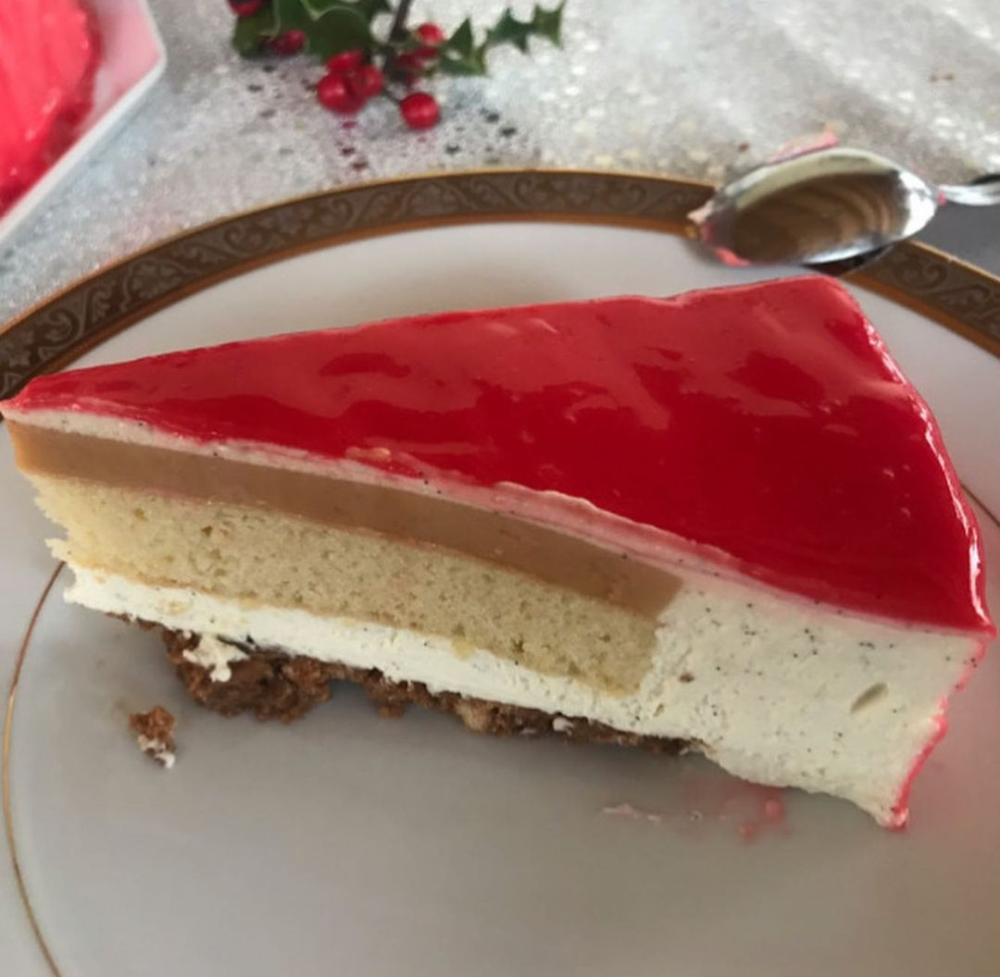
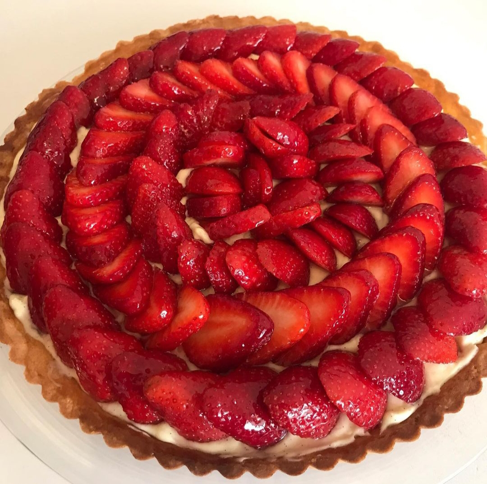
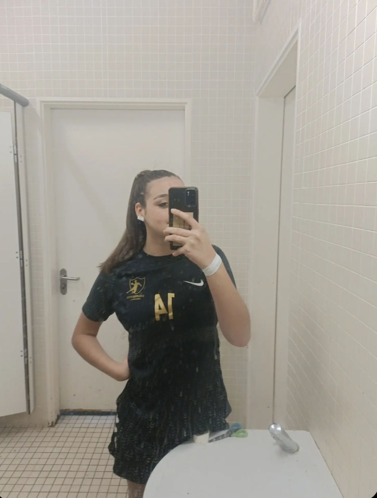
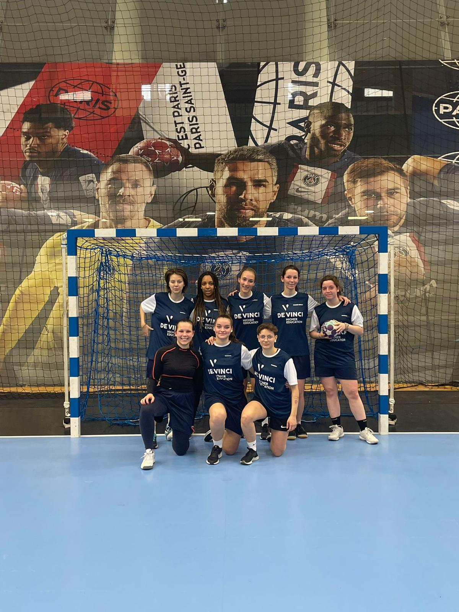

I am in my first year at the EMLV in digital bachelor and international business. I love sport, especially PSG club🔴🔵. I still hope one day that this incredible club will win the Champions League.
Discover PSGI'm passionate about football. I watch almost all the matches of all the big leagues. Sometimes for a whole day ! Stay strong !
I love cooking everything. Salty or sweet, I like to cook everything except cauliflower. Yummy !
 I love sport. I have been playing handball for 4 years but I have also done athletics, badminton, table tennis, judo, swimming before. Wow !
 